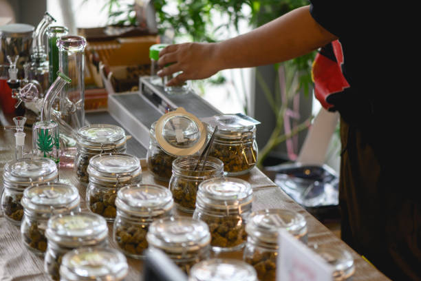

How to Find the Perfect Kratom Dosage: Expert Recommendations Revealed
Posted by on 2024-06-09
Finding the perfect kratom dosage can be a challenging task for many individuals. With so many factors to consider, it's important to seek expert recommendations in order to achieve the desired effects without experiencing any negative side effects.
One of the first things to consider when determining your ideal kratom dosage is your tolerance level. If you are new to using kratom, it's recommended to start with a low dose and gradually increase it until you find the right amount that works for you. This will allow your body to adjust to the effects of the herb and help prevent any potential discomfort or adverse reactions.
Another important factor to consider is the strain of kratom you are using. Different strains have different potencies and effects, so it's essential to do some research on which strain would work best for your needs. For example, if you are looking for pain relief, a red vein strain may be more suitable than a white vein strain which is known for its energizing properties.
It's also crucial to take into account your individual body chemistry and metabolism when determining your ideal kratom dosage. Factors such as weight, age, and overall health can all play a role in how your body processes and responds to kratom. Consulting with an expert or healthcare professional can help guide you in finding the right dosage that works best for you.
In conclusion, finding the perfect kratom dosage requires careful consideration of various factors such as tolerance level, strain type, and individual body chemistry. By seeking expert recommendations and starting with a low dose, you can effectively determine the ideal amount of kratom that provides the desired benefits without any unwanted side effects. Remember to always listen to your body and make adjustments as needed in order to achieve optimal results from using this powerful herbal supplement.